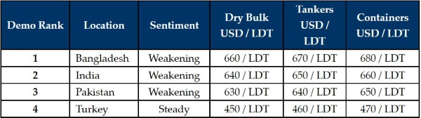

inWeekly Demolition Reports21/03/2022

There is talk this week that markets may well have peaked as Bangladesh, India and even Turkey suffered some falls from some of the record steel plate prices seen recently. Cooking oil and commodity prices are chiefly to blame for this dip, but it also cannot be expected that the markets will continually go up (as they have been doing for nearly the last two years).
The unfolding crisis in Ukraine certainly has affected global oil and gas prices and those countries that regularly purchase their reserves from Russia (such as India) are now having to hammer out new plans to sustain their local economies, especially given the bevy of sanctions currently in place.
Yet, these are decade long highs that we are witnessing at present, and not since the heady days of 2008 have vessel prices been so firm. As a result, most owners are witnessing values on their end-of-life ships at least double over the past year or so.
Notwithstanding, chartering markets, particularly in the dry and container sectors, continue to perform admirably and certain routes on tankers have once again started to pick up, which is increasingly depriving hungry Recyclers of tonnage and is keeping prices (artificially?) firm. Furthermore, despite this latest dip of about USD 20 – USD 30 / LDT, commodity prices remain firm and there certainly is scope for improvement once again, given that the end of the Ukraine crisis seems far from over at this juncture.
The Indian Rupee, despite firming marginally this week, has suffered some noteworthy currency reversals of late, compounding some of the drastic steel falls seen over the last 2 – 3 weeks. Finally, in the West End, steel fundamentals (both import and local steel plate) recorded depreciations of their own, with the Lira further aggravating the situation this week.
Overall, it may perhaps take a week or two of stability before we understand where the new reality on prices actually is, as the coveted USD 700/LDT level (and above) still appears somewhat illusory for the most part and on most standard units.
For week 11 of 2022, GMS demo rankings / pricing for the week are as below.

📄 Download PDF: 2022-03-21TMb_org.pdfSource: GMS,Inc. ,https://www.gmsinc.net/gms_new/index.php/web